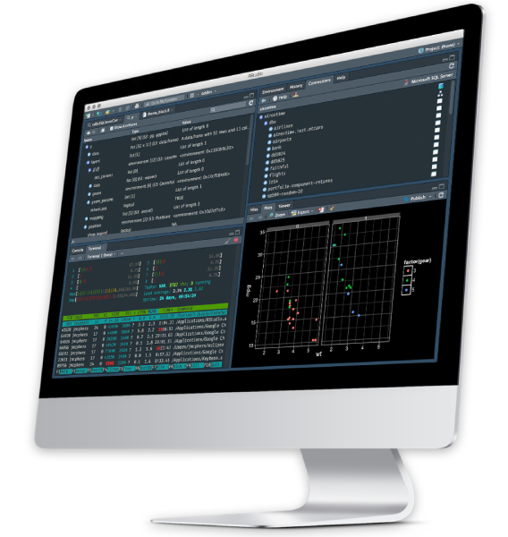

¿Piensas que aprender R es demasiado difícil? ¡Piénsalo de nuevo! Con el enfoque y los recursos adecuados, cualquiera puede dominar R y aplicarlo a la ciencia de datos, sin importar tu experiencia previa.

Nuestros cursos de 6 semanas están diseñados para guiarte desde la teoría hasta la práctica, escribiendo código desde el primer día. Creemos que la mejor manera de aprender a programar es pensando y escribiendo código, no copiando y pegando.
En nuestras clases grupales, dedicamos el 50% del tiempo a teoría y el 50% a práctica en grupos, permitiéndote interactuar y aprender de tus compañeros. Además, ofrecemos sesiones privadas en vivo donde practicamos contigo y aclaramos dudas al momento.
Contamos con horarios flexibles, tanto entre semana como fines de semana, y todas las sesiones quedan grabadas para que las revises cuando lo necesites.
Al finalizar el curso, aplicarás lo aprendido en un proyecto real, seleccionando un tema relevante para ti. Con la guía de Carlos Aguero, instructor certificado por RStudio y Software Carpentry, y nuestra garantía de satisfacción: si no estás satisfecho después de tres lecciones, te reembolsamos el 100% sin más preguntas, estamos comprometidos con tu éxito.
Desde 2016, me dedico a enseñar a personas de todas las áreas y niveles de formación a programar en R. Mi misión es desmitificar la programación en R y demostrar que cualquier persona puede dominarla con el enfoque y los recursos adecuados.
Soy instructor certificado por RStudio, especializado en Tidyverse y Shiny. En diciembre de 2023, tuve el honor de unirme a los instructores de la prestigiosa organización The Software Carpentry. En los últimos 8 años, he impartido más de 50 cursos relacionados con R y ciencia de datos, instruyendo a más de 400 estudiantes de toda América Latina.
Nuestros estudiantes son la mejor prueba de lo mucho que amamos dar clases. Aquí tienes algunos de ellos:
Aquí encontrarás respuestas a las preguntas más comunes sobre nuestro curso. Si tienes alguna otra duda, no dudes en contactarnos.
Si no estás satisfecho, ofrecemos un reembolso del 100%. Solo necesitas haber asistido a un mínimo de tres lecciones. Si después de tres lecciones no estás contento, puedes pedir un reembolso sin preguntas adicionales.
No te preocupes. Si no puedes asistir a las clases en vivo, te enviaremos todos los códigos, materiales y la grabación de la clase automáticamente a tu correo electrónico o a tu WhatsApp. Además, puedes programar sesiones de seguimiento privadas de una hora con el instructor para discutir los temas y recibir ejercicios adicionales.
El curso incluye ejemplos y ejercicios prácticos adaptables a diversas áreas. Ofrecemos sesiones privadas de seguimiento de una hora donde trabajamos en tus proyectos específicos. También puedes programar una videollamada con el instructor antes de inscribirte para evaluar tus necesidades.
Sí, todos los ejemplos, presentaciones y códigos se pueden descargar y reutilizar. Nuestra licencia permite el uso comercial de estos recursos, facilitándote la integración en tu propio trabajo.
Puedes escribirnos por WhatsApp o programar una videollamada en el sitio web. Nos conectaremos rápidamente para solucionar tu problema. No permitiremos que la frustración de tener problemas técnicos interrumpa o arruine tu aprendizaje.
Sí, emitimos certificados digitales a través de Certifier, una plataforma utilizada por múltiples instituciones, empresas y universidades a nivel internacional. Perfecto para tu perfil de LinkedIn.
Para estudiantes, académicos o colaboradores de organizaciones sin fines de lucro, habilitamos espacios gratuitos constantemente. Contáctanos a info@aprendetidyverse.com para presentar tu caso y estaremos encantados de ayudarte.
La comunidad de usuarios de R me ha permitido conectar con personas interesantes de todo el mundo, algo que valoro enormemente. Si tienes una idea de proyecto, especialmente si está relacionado con datos de Costa Rica, me encantaría ayudarte en lo que sea posible.
Para charlar o preguntar, escríbeme a carlos.aguero@aprendetidyverse.com. También puedes encontrarme en LinkedIn o en Twitter (sí, sé que ahora se llama X, pero me resisto a cambiarle el nombre; simplemente no me gusta). ¡Espero tu mensaje!